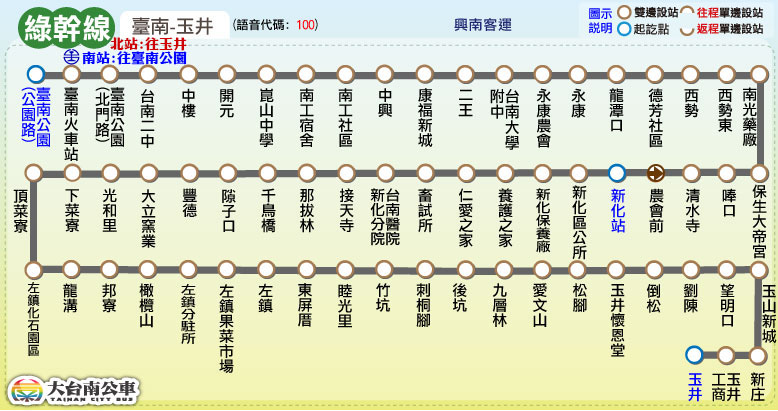

Tainan Bus for FUN
路線圖
路線資訊
票價表
時刻表
轉乘資訊
大台南公車 ─ 綠幹線 路線圖
Tainan Bus Green Line, Route Map

大台南公車 ─ 綠幹線 路線資訊
Tainan Bus Green Line, Route Information
起訖點
台南公園 － 玉井
營運公司
興南客運
首／末班車發車時刻
往 玉 井：05:55／21:55
往 台南公園：06:00／22:00
班距
固定班次 尖15離30
收費方式
里程計費
公車動態資訊
票價表
Ticket Fare
全票
半票
投現
-
-
電子票證
-
-
時刻表
Bus schedule
大台南公車－綠幹線 主要轉乘點資訊
Tainan bus green line, Transfer information
台南火車站
台鐵台南站
88
、
99
0左/右
、
1
、
2
、
3
、
5
、
6
、
7
、
9
、
10
、
11
、
14
、
18
、
21
綠幹線
藍幹線
紅幹線
、
紅1
、
紅2
、
紅3
、
紅4
橘3
、
橘12
新化
綠幹線
、
綠1
、
綠2
、
綠3
、
綠4
、
綠6
、
綠7
、
綠10
、
綠11
、
綠12
、
綠13
、
綠14
、
綠15
、
綠16
玉井
綠幹線
、
綠20
、
綠21
、
綠22
、
綠23
、
綠24
、
綠25
、
綠26
、
綠27
橘幹線
、
橘20